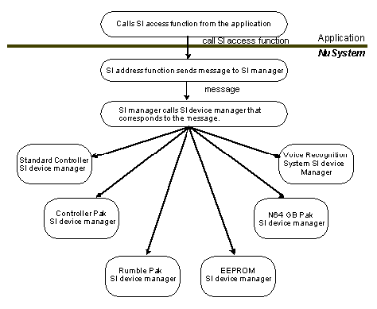
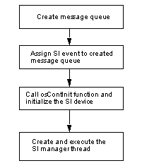
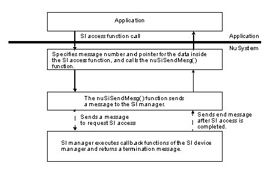

In NuSystem, all devices such as the Controller, Controller Pak and Rumble Pak, that send and receive data via the serial interface (SI) are accessed from the SI Manager.
Examples of devices that connect via the SI are the Standard Controller, Controller Pak, Rumble Pak, the EEPROM, and the Voice Recognition System. However, the control method differs for each device, the devices cannot connect to access the SI manager at the same time. Support is also required for devices that may come out in the future. Since different applications make use of different devices, consideration must be made for configurations that do not include codes for devices that are not in use.
NuSystem manages access to the SI using a double-manager system: there is a set of SI device managers, each controlling a different SI device, and there is the SI manager, which has control over the various SI device managers. In this way, SI devices can be easily accessed from the application, and a variety of devices can be flexibly assembled together, while keeping mutual exclusion in mind.
The application uses an SI access function to request from the SI manager, access to an SI device manager.
SThe SI manager receives the request from the application and then calls the corresponding SI device manager. The SI manager also receives retrace messages from the scheduler and executes the various SI device manager's retrace processes. SI device managers are registered in the SI manager at the time of initialization. SI devices can only be accessed from their corresponding SI device managers. This process shown in Figure 6.1.
By controlling access to SI devices from the application (via the SI manager), the application is free of the burden of managing the SI, and at the same time, mutual exclusion is realized.
This section includes a discussion of the NuSystem SI manager and SI device managers.
The method for calling the SI device managers from the SI manager has been changed since NuSystem Version 2.0.

Figure 6.1 Process Flow when Accessing SI Devices from the Application

The SI Manager can be broadly divided into two parts: the initiator and the thread. The SI Manager initiator is the nuSiMgrInit function. (It is also called within nuContInit function.) The initialization flow is illustrated as Figure 6.2.

Figure 6.2 SI Manager Initialization Flow
After initialization, the SI Manager thread is first registered as a client of the Scheduler, and then waits for a message. It can receive two types of messages: a retrace message, or some message being sent from the application to an SI device manager.
At the point immediately after initialization, no SI device managers have been registered in the SI manager yet, so the application registers the SI device managers it needs. After that, the application can use SI access functions to access the SI devices.
The SI manager uses the NUCallBackList structures to manage the SI device managers as a link list. The NUCallBackList structure is defined as follows in nusys.h:
typedef struct st_CallBackList {
struct st_CallBackList* next;
s32 (**func)(NUSiCommonMesg*);
u16 majorNo;
u8 funcNum;
} NUCallBackList;
Each SI device manager has a NUCallBackList structure type variable. When an SI device manager is registered in the SI manager, it is added to the end of the link list.
Each SI device manager is allocated a Major number - a number unique to each device. This value is stored in majorNo. The application uses the Major number to specify a given SI device manager.
The SI device manager is a collection of callback functions. The pointer to this array of function pointers is stored in the func member of the structure. The total number of callback functions is stored in funcNum. (See Figure 6.3).

Figure 6.3 Data Structure of Link List
The data structure managed by the SI device manager is composed of a link list and an array of function pointers. Thus, by grouping the Major number and the index to the array (in NuSystem this is called the Minor number), you can specify a single callback function. Using this convention yields the "Message number," a 16-bit value with the Major number as the upper 8 bits and the Minor number as the lower 8 bits (See Figure 6.4).

Figure 6.4 Message Numbers Sent to the SI Manager
When the application calls a NuSystem SI access function, the function internally specifies the corresponding Message number and sends a message to the SI manager. The SI manager then executes the callback function for the SI device manager that corresponds to this Message number. Afterward, if the process is completed, a termination message is returned to the SI access function. At the present time, almost all of the SI access functions are synchronous type functions, so they wait internally for a termination message. If the functions were made asynchronous, then the application could perform another process while the SI process is waiting. However, in this case, you would need to be very careful with the message buffer. The one NuSystem SI access function that is asynchronous is nuContReadStart (however, this excludes the functions that do not send messages to the SI manager).
On every retrace message, the SI manager calls the function (func[0]) that resides at the head of the function pointer array specified by the func member of the NUCallBackList structure. The processes to be executed in every frame are placed inside the functions registered here. This is used to read the Controller and control the Rumble Pak, etc. When there is no process to execute and no need to register a function, then specify the NULL pointer.
There is also a special message that can be sent to the SI manager to make it halt temporarily. This is used mainly when you want the application to directly use the N64OS to access an SI device. Please use nuSiMesgQ as the message queue associated with SI events. The SI manager is halted using the nuSiMgrStop function. It is restarted using the nuSiMgrRestart function. (See Figure 6.5)

Figure 6.5 Flow Diagram for the SI Manager
Following is a brief explanation of the SI access functions that are called from the application and send messages to the SI manager.
This type of function utilizes the nuSiSendMesg function to send a message to the SI manager. The first argument in the nuSiSendMesg function is the Message number, and the second argument is the pointer. The nuSiSendMesg function waits internally for a termination message from the SI manager. When this function is used, access is always synchronous. The pointer specified in the second argument of the nuSiSendMesg function is used for sending data between the callback function and the SI access function. The process flow is diagrammed in Figure 6.6.

Figure 6.6 Callback Functions Flow from the Application

In this section we explain how to create an asynchronous SI access function, as an example of customizing the SI device manager.
With the exception of the Standard Controller, almost all NuSystem SI access functions are synchronous functions. However, because the SI manager is a separate thread, the application can continue to operate even while the SI manager is waiting for access to the SI to terminate. Performing other processes can be useful, especially in the case of processes that take several frames to complete. However, the application still needs to know when access to the SI has ended. Because the SI manager and the application are different threads, you must take into account mutual exclusion when exchanging flags. Here, messages will be used as a way to inform the application that SI access has ended.
In the following example, we will make an asynchronous function out of nuContPakFileReadWrite - the function used to read/write to the Controller Pak. These are actions that involve relatively prolonged access to the SI.
First, create nuContPakFileReadWriteAsync as the function to initiate reading from and writing to the Controller Pak. With this function, the region for messages sent to the SI manager and the buffer for termination messages are defined as global variables (secured in the stack for asynchronous functions). Next, set the necessary data in these global variables, and then send a message to the SI manager. Then end the function without waiting for an SI termination message.
Now, create the nuContPakReadWriteAsyncEnd as the function to check for the end of the reading or writing. This function checks whether or not a termination message has been received. If the message has been received, an error value is set in the Controller Pak structure and 0 is returned. If the message has not been received, then -1 is promptly returned.
/* Variables used between functions are made global */
OSMesgQueue endMesgQ;
OSMesg endMesg;
NUContPakFileRWMesg rwMesg;
NUSiCommonMesg siCommonMesg;
/*----------------------------------------------------------------------------------------------*/
/* Begin reading data from or writing data to the Controller Pak */
/*----------------------------------------------------------------------------------------------*/
void nuContPakFileReadWriteAsyncStart(NUContPakFile *file,
s32 offset, s32 size, u8* buf, u32 mode)
{
/* Create message queue for sending termination messages */
/* If you create the message queue before calling this function, it */
/* does not need to be done here. */
osCreateMesgQueue(&endMesg, &endMesgQueue,1);
/* Prepare data for sending to SI device manager */
rwMesg.file = file;
rwMesg.offset = offset;
rwMesg.size = size;
rwMesg.mode = mode;
rwMesg.buf = buf;
/* Set message for sending to SI manager */
siCommonMesg.mesg = NU_CONT_PAK_READWRITE_MSG;
siCommonMesg.dataPtr = &rwMesgbuf;
/* Send message to SI manager */
osSendMesg(&nuSiMesgQ,
NU_CONT_PAK_READWRITE_MSG,
OS_MESG_BLOCK);
}
/*----------------------------------------------------------------------------------------------*/
/* Check whether read/write to Controller Pak has ended */
/*----------------------------------------------------------------------------------------------*/
s32 nuContPakReadWriteAsyncEnd(NUContPakFile *file)
{
s32 ret;
/* Check whether a termination message has come */
ret = osRecvMesg(&nuSiMesgQ, NULL, OS_MESG_NOBLOCK);
/* 0 if ended, otherwise -1 */
if(!ret){
/* Set error value */
file->return = nuSiCommandMesg.error;
}
return ret;
}
Using these functions you can access the Controller Pak asynchronously.